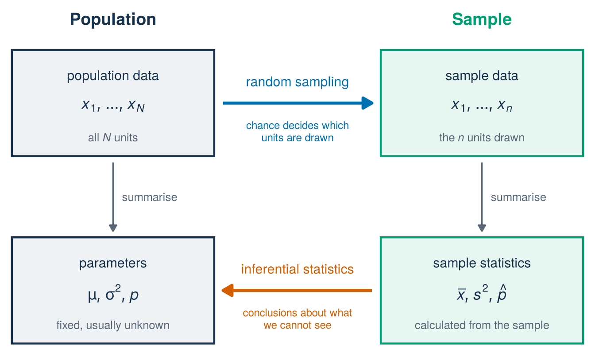
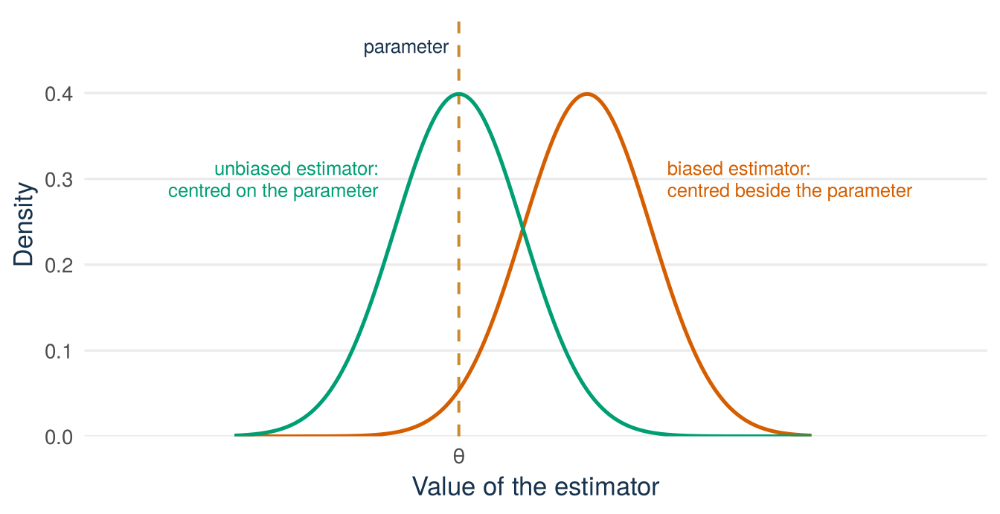

distinguish a population, a sampling frame, and a sample
tell parameters, estimators, and estimates apart, and say what unbiased means
explain how an estimate varies from sample to sample
judge what a sample can show from how it was drawn
Driving question
Checking every record, customer, or transaction is usually too expensive, so firms check a sample and act on what the sample shows. This works only if a small sample gives reliable information about the whole population.
We can only afford to inspect 100 of the 1,441 pitches in the Shark Tank file. What can 100 randomly chosen records tell us about all of them, and what can they never tell us about entrepreneurs in general?
Before class
Do all the preparation below before class.
Video preparation Watch The Sample Mean and Some Terminology. Be ready to distinguish a number that describes the whole population from a number calculated from a sample. The video writes \(M_n\) for the sample mean, which this book writes \(\bar X\), and \(\hat\Theta\) for an estimator. The link is also listed in the External Video Guide. The videos explain key ideas in another way and can use a different notation. The lecture material and its notation always come first.
Shark Tank dataWarm up. Suppose we want the mean equity offered (equity_offered_pct) across the 1,441 recorded pitches in completed Seasons 1 to 16, but can inspect only 100 randomly selected records. Identify:
the population, that is, the complete set of records the question is about
the variable
the sample
the number of the population that we want to know
a number calculated from the sample that we could use in its place.
Check your preparation
The population is the 1,441 recorded pitches, the variable is the equity initially offered, and the sample is the 100 selected records. The number we want to know is the mean equity offered across all 1,441 records. The mean of the 100 sampled records can be used in its place. The lecture material gives these two numbers their names. The first is a parameter. The second is a sample statistic, used as an estimate of the parameter.
Predict. Answer this question before you come to class: two students each draw their own random sample of 100 pitches from the file and each compute the mean equity offered. Will their two sample means be equal? Choose one answer and write it down. The lecture material gives the correct answer.
This section first shows how a sample and its population are connected. It then draws several random samples from the Shark Tank file and compares their means. After that it gives names to what you see: population, sample, parameter, sample statistic, estimator, and estimate.
Start with a founder’s question
Shark Tank data Imagine a venture with 1,441 customers. You want to know what they pay on average, and asking all of them costs too much. Can 100 of them, chosen by chance, tell you? Our file lets us try this out, because here we know the answer for all 1,441 records. Take the equity offered (equity_offered_pct) as the number of interest:
sharks <-read.csv("data/shark_tank_teaching.csv", stringsAsFactors =FALSE)mean(sharks$equity_offered_pct) # all 1,441 records
[1] 13.20761
set.seed(123)mean(sample(sharks$equity_offered_pct, 100)) # 100 records chosen by chance
[1] 12.76
All 1,441 records give a mean equity offered of 13.21%. The 100 records chosen by chance give 12.76%. That is close, but it is not the same. Two questions follow. Would another 100 records give the same number? And how far from 13.21% can the mean of 100 records be? This lecture answers the first question. Lecture 8 answers the second.
From a sample to the population
Both questions come from the same situation. In practice, we use a sample to draw conclusions about the whole population.
Start with the population. Here it is the full file with \(N=1{,}441\) pitches. The letter \(N\) always stands for the number of units in the population. A variable such as the equity offered has one value for every unit. These values are the population data, written \(x_1,\ldots,x_N\). The numbers that describe the population data are called parameters. Examples are the population mean \(\mu\), the population variance \(\sigma^2\), and the population proportion \(p\) of a 0/1 variable. Parameters are usually unknown, because nobody observes the whole population.
The sample has \(n\) units, here \(n=100\). Their values are the sample data, written \(x_1,\ldots,x_n\). A number calculated from the sample data is called a sample statistic, or statistic for short. Examples are the sample mean \(\bar x\), the sample variance \(s^2\), and the sample proportion \(\hat p\) (read “p hat”). The sample is the part we can see. The parameters are what we want to know.
See the R code for this figure
library(ggplot2)# Four boxes: data and summary numbers, for the population and for the sampleboxes <-data.frame(xmin =c(0.2, 0.2, 6.4, 6.4),xmax =c(3.6, 3.6, 9.8, 9.8),ymin =c(3.3, 0.3, 3.3, 0.3),ymax =c(5.0, 2.0, 5.0, 2.0),side =c("population", "population", "sample", "sample"))ggplot() +geom_rect(data = boxes,aes(xmin = xmin, xmax = xmax, ymin = ymin, ymax = ymax,colour = side, fill = side), linewidth =0.8) +scale_colour_manual(values =c(population ="#17324D", sample ="#009E73"),guide ="none") +scale_fill_manual(values =c(population ="#EEF2F5", sample ="#E8F6F1"),guide ="none") +# column titlesannotate("text", x =1.9, y =5.5, label ="Population",colour ="#17324D", size =5, fontface ="bold") +annotate("text", x =8.1, y =5.5, label ="Sample",colour ="#009E73", size =5, fontface ="bold") +# upper boxes: the dataannotate("text", x =1.9, y =4.6, label ="population data",colour ="#17324D", size =4) +annotate("text", x =1.9, y =4.1,label ="list(italic(x)[1], ldots, italic(x)[italic(N)])",parse =TRUE, colour ="#17324D", size =4.6) +annotate("text", x =1.9, y =3.6, label ="'all'~italic(N)~'units'",parse =TRUE, colour ="#5B6976", size =3.4) +annotate("text", x =8.1, y =4.6, label ="sample data",colour ="#17324D", size =4) +annotate("text", x =8.1, y =4.1,label ="list(italic(x)[1], ldots, italic(x)[italic(n)])",parse =TRUE, colour ="#17324D", size =4.6) +annotate("text", x =8.1, y =3.6, label ="'the'~italic(n)~'units drawn'",parse =TRUE, colour ="#5B6976", size =3.4) +# lower boxes: the numbers that summarise the dataannotate("text", x =1.9, y =1.6, label ="parameters",colour ="#17324D", size =4) +annotate("text", x =1.9, y =1.1, label ="list(mu, sigma^2, italic(p))",parse =TRUE, colour ="#17324D", size =4.6) +annotate("text", x =1.9, y =0.6, label ="fixed, usually unknown",colour ="#5B6976", size =3.4) +annotate("text", x =8.1, y =1.6, label ="sample statistics",colour ="#17324D", size =4) +annotate("text", x =8.1, y =1.1,label ="list(bar(italic(x)), italic(s)^2, hat(italic(p)))",parse =TRUE, colour ="#17324D", size =4.6) +annotate("text", x =8.1, y =0.6, label ="calculated from the sample",colour ="#5B6976", size =3.4) +# grey arrows: summarising the data, with the tools of Lectures 1 to 6annotate("segment", x =c(1.9, 8.1), xend =c(1.9, 8.1),y =3.2, yend =2.1, colour ="#5B6976", linewidth =0.6,arrow =arrow(length =unit(0.08, "inches"), type ="closed")) +annotate("text", x =c(2.05, 8.25), y =2.65, label ="summarise",colour ="#5B6976", size =3.4, hjust =0) +# blue arrow: random sampling, from the population data to the sample dataannotate("segment", x =3.75, xend =6.25, y =4.15, yend =4.15,colour ="#0072B2", linewidth =1.2,arrow =arrow(length =unit(0.12, "inches"), type ="closed")) +annotate("text", x =5, y =4.5, label ="random sampling",colour ="#0072B2", size =4) +annotate("text", x =5, y =3.7,label ="chance decides which\nunits are drawn",colour ="#0072B2", size =3.2, lineheight =0.95) +# orange arrow: inferential statistics, from the statistics to the parametersannotate("segment", x =6.25, xend =3.75, y =1.15, yend =1.15,colour ="#D55E00", linewidth =1.2,arrow =arrow(length =unit(0.12, "inches"), type ="closed")) +annotate("text", x =5, y =1.5, label ="inferential statistics",colour ="#D55E00", size =4) +annotate("text", x =5, y =0.7,label ="conclusions about what\nwe cannot see",colour ="#D55E00", size =3.2, lineheight =0.95) +coord_cartesian(xlim =c(0, 10), ylim =c(0.1, 5.8), expand =FALSE) +theme_void()

Figure 7.1: From the population to the sample and back. Random sampling (blue arrow) decides which units of the population enter the sample. On both sides the data are summarised by a few numbers: parameters for the population, sample statistics for the sample. Inferential statistics (orange arrow) uses the sample statistics to draw conclusions about the parameters.
Figure 7.1 shows the two sides and the steps between them. On the left is the population, with its data and its parameters. On the right is the sample, with its data and its statistics. Both sides use the tools of Lectures 1 to 6: tables, graphs, means, and variances. These tools are called descriptive statistics. The blue arrow is random sampling: chance decides which units of the population enter the sample. The orange arrow is new. Inferential statistics is the step from the statistics on the right to the parameters on the left. It uses numbers we can see to draw conclusions about numbers we cannot see.
We take this step in three stages.
This lecture: the sample is random. Before the draw, the sample data are not numbers but random variables. Every statistic calculated from them is then a random variable too. A statistic seen in this way is called an estimator. The number it gives for one sample is called an estimate. Both terms are defined in the section on parameters, estimators, and estimates.
Lecture 8: how an estimator behaves across samples. Many different samples could have been drawn. Lecture 8 finds the centre, the spread, and the shape of the estimator across all of them.
Lectures 9 and 10: what one estimate says about the parameter. These lectures use the behaviour found in Lecture 8 to say how much you can trust one estimate.
All three stages need the blue arrow. We can work out the behaviour of an estimator across samples only if a known random mechanism draws the sample. That is why this lecture looks closely at how a sample is drawn.
Five samples, five means
Shark Tank data The code below draws five different random samples of 100 pitches, one after another. For each sample it keeps one number: the mean equity offered. The number we try to recover is the mean of all 1,441 records:
It is about 13.21%. We know it only because we have the full file. In a real study you have only the sample. That is why the behaviour of the sample mean matters.
Each sample of 100 has its own seed. A seed fixes the random draw, so you get the same five numbers when you run the code yourself. The option replace = FALSE means that each record can be drawn only once:
seeds <-101:105sample_means <-numeric(length(seeds))for (i inseq_along(seeds)) {set.seed(seeds[i])# replace = FALSE: each record can be drawn only once rows <-sample(seq_len(nrow(sharks)), size =100, replace =FALSE) sample_means[i] <-mean(sharks$equity_offered_pct[rows])}round(sample_means, 2)
[1] 12.03 12.77 13.75 12.07 13.58
Five samples, five different means, from about 12.0 to about 13.8. Figure 7.2 puts them on one axis, with the population mean drawn as a fixed vertical line.
Figure 7.2: Five random samples of 100, five sample means (green dots), one fixed population mean (gold dashed line at 13.21). The sample mean varies from draw to draw. The population mean stays fixed.
Each green dot is the mean of one sample. It is a sample statistic, used here as an estimate of the population mean. The gold dashed line is the mean of all 1,441 records. It is the parameter, one fixed number. The dots scatter around the line. None hits it exactly and none is far from it. No dot is wrong, and the scatter is not a mistake in the procedure. Random samples give estimates that differ by chance.
This answers the prediction question from before class: two students who draw their own random samples will almost never get equal means. Any two of the five dots differ, and your own sample (in the after-class task below) will differ again.
One question remains. If we drew a sixth sample, where would its mean be? You cannot say exactly, but the five dots suggest a range in which it would probably fall. The lab below shows that range for many more samples. Lecture 8 gives a formula for the width of this range.
Explore it: the sampling-distribution lab
Shark Tank data Five dots are a first step. The lab below draws many more samples. On the left it shows the histogram of the equity offered in all 1,441 records, which is strongly right-skewed. Choose a sample size \(n\) with the slider and press Draw 100 samples. The mean of each sample is added to the histogram on the right. Reset clears that histogram.
Work through three settings. Each time, look at the centre, the spread, and the shape of the histogram of means.
Set \(n = 2\) and redraw several times. The means scatter widely and the histogram of means is still skewed.
Set \(n = 25\). The histogram of means narrows and starts to look symmetric, centred near 13.2.
Slide up to \(n = 100\). The histogram of means is narrow and bell-shaped around the population mean, even though the population histogram beside it has not changed at all.
The distribution of the sample means on the right has a name.
Definition
Sampling distribution. The sampling distribution of a sample statistic, such as the sample mean, is its distribution across all possible random samples of the same size. It shows how the statistic varies from sample to sample.
The histogram in the lab approximates the sampling distribution of the mean. Lecture 8 explains where it is centred, how wide it is, and why it becomes bell-shaped.
Define the population before calculating
Definition
Population and sample. The population is the complete set of units about which a question is asked. The sample is the part of the population that is observed. The number of units in the population is written \(N\), and the number of units in the sample is written \(n\).
Two more sets matter. A sampling frame is the list from which the sample is selected. The target population is the larger group that we hope to draw conclusions about.
These sets are not always the same. The Shark Tank file lists the recorded US Shark Tank pitches from completed Seasons 1 to 16. It is not a random sample of all entrepreneurs, all funding pitches, or even all applicants to the show. A random sample of rows from this file supports conclusions about the population of 1,441 records (\(N=1{,}441\)). It does not undo the way the show selected its pitches.
Check: classify two scenarios
Scenario A. A food-delivery startup wants to know how satisfied “its customers” are. It emails a survey to the app users who agreed to receive marketing emails. 800 reply. Identify the target population, the frame, and the sample.
Scenario B. A consultant uses our 100 sampled pitches to advise “US entrepreneurs seeking investors.” What is the frame, and what is the target population being claimed?
Answers. In A, the target population is all customers. The frame is the list of users who agreed to receive marketing emails, which already leaves out many customers. The sample is the 800 who chose to reply. These 800 are volunteers from an incomplete frame. In B, the frame is the 1,441 recorded Shark Tank pitches. The claimed target population is all US entrepreneurs seeking investors. Random sampling of rows supports conclusions about the frame, not about that far larger target group.
Simple random sampling
Shark Tank data In a simple random sample of size \(n\), every set of \(n\) population units has the same chance of being selected.
Before the sample is drawn, we do not know which unit will come first. The value of the first drawn unit is therefore a random variable, written \(X_1\). The same holds for the second draw, \(X_2\), and so on up to \(X_n\). When the variable \(X\) is observed for every unit of the sample, we get a sequence of \(n\) random variables, \(X_1,X_2,\ldots,X_n\). This sequence is also called a random sample. The word is used both for the selected units and for the variables observed on them. After the draw we have numbers: the observed values \(x_1,\ldots,x_n\). They are also called realised values. As in Lecture 2, capital letters stand for random variables and lower-case letters for their values.
Why work with the random version, when the numbers are what we have? Because the two questions of this lecture are not about the one sample in our hands. “Would another 100 records give the same number?” and “How far from 13.21% can the mean of 100 records be?” are questions about all the samples that could have been drawn. The observed values are one outcome, and one outcome says nothing about the others. Only \(X_1,\ldots,X_n\) describe every sample that could come out. With the capital letters we can speak of the expectation and the variance of a sample mean, that is, of its behaviour across samples. Lecture 8 calculates both, and every statement about precision is based on them. The lower-case letters give the result of a calculation. The capital letters give the reason why we can trust the result.
There are two ways to draw:
With replacement: a selected unit is returned before the next draw. The population is the same at every draw, so the first draw says nothing about the second. The draws are independent, and each draw has the same distribution.
Without replacement: a unit cannot be selected twice. Each draw taken alone still has the same distribution. But the draws are dependent, because one draw changes which units are left.
The samples in this lecture, and almost all samples in practice, are drawn without replacement. The two ways of drawing have two properties in common and differ in one.
What the two ways of drawing share
Shuffle a deck of playing cards and deal two cards face down. The second card is as likely to be the ace of spades as the first. The shuffle gives every card the same chance of ending up in any position.
A simple random sample works in the same way. Before the draw, every unit of the population has the same chance, \(1/N\), of being the first unit drawn. It has the same chance of being the second, and so on. Here \(N=1{,}441\) and \(n=100\). So each \(X_i\) is the value of one unit chosen at random from the whole population. This holds for every position \(i\), with and without replacement. In symbols, the \(X_i\) all have the same distribution:
\[P(X_1\le x)=P(X_2\le x)=\cdots=P(X_n\le x)\quad\text{for every number }x.\]
So they also have the same expectation and the same variance. These are the expectation and the variance of one unit drawn at random from the population, which are the population mean and the population variance:
\[E[X_i]=\mu,\qquad \operatorname{Var}(X_i)=\sigma^2\qquad\text{for all } i=1,\ldots,n.\]
Lecture 8 builds on these two lines.
Check: does the second draw have the same distribution as the first?
An invented example. A population of three pitches offers 10%, 10%, and 20% equity. Two pitches are drawn without replacement. Find \(P(X_1=20)\) and \(P(X_2=20)\).
Answer. First draw: one of the three pitches offers 20%, so \(P(X_1=20)=1/3\).
Second draw: \(X_2\) is 20 only if the 20 does not come out first (probability \(2/3\)) and is then drawn from the two pitches that remain (probability \(1/2\)). So \(P(X_2=20)=\frac23\times\frac12=\frac13\), the same as for the first draw. In the same way, \(P(X_2=10)=\frac13\times1+\frac23\times\frac12=\frac23=P(X_1=10)\).
As long as you know nothing about the first draw, the second draw is a draw of one unit at random from the whole population. The same calculation works for any population and any position.
These two lines follow from how the sample is drawn. They are not an extra assumption. If the sample is not a simple random sample, for example customers who were simply easy to reach, the \(X_i\) need not have the same distribution, and the results of Lecture 8 do not apply.
What differs
With replacement, the draws are independent. For any two draws \(X_i\) and \(X_j\), the product form of Lecture 4 holds:
\[P(X_i\le a\text{ and }X_j\le b)=P(X_i\le a)\,P(X_j\le b).\]
Draws that are independent and all have the same distribution are called independent and identically distributed (iid).
Without replacement, the draws are dependent. Suppose the first unit drawn has a large value. Then one large value is gone from the pool, and the second draw is slightly more likely to be small. The product form fails, and the covariance between two draws is negative. The optional box below gives the value of this covariance.
Why the difference is usually ignored
The dependence comes from removing units from the pool. Removing 100 units from 1,441 changes the pool very little. When the sample is a small part of the population, sampling without replacement is almost the same as sampling with replacement.
The 10% condition is the practical rule for this. If the sample size \(n\) is at most 10% of the population size \(N\), written \(n\le 0.10N\), the draws are treated as independent. The sample is then analysed as if it were drawn with replacement, that is, as iid. This book always does so when the condition holds.
Optional: sampling without replacement, formally
Without replacement, the draws \(X_1,\ldots,X_n\) all have the same distribution, with mean \(\mu\) and variance \(\sigma^2\). They are not independent. Two different draws have a negative covariance:
For \(N=1{,}441\) this is \(-\sigma^2/1440\), which is tiny next to the variance \(\sigma^2\) of one draw.
Lecture 8 shows that \(\operatorname{Var}(\bar X)=\sigma^2/n\) for independent draws. Without replacement, the negative covariances make the variance slightly smaller:
The second factor is called the finite population correction. For \(n=100\) and \(N=1{,}441\) it equals \(1341/1440\approx 0.93\). It is close to 1 whenever the 10% condition holds, so it can be left out.
The sample used in the rest of this lecture and in Lectures 8 to 10 is drawn with seed 123, so every reader gets the same 100 rows:
Figure 7.3: Initial equity offered: all 1,441 records (grey bars) and the seed-123 random sample of 100 (green connected points). The sample resembles the population but does not reproduce it exactly.
The horizontal axis shows the equity offered in intervals of 5 percentage points. The vertical axis is density, so the two datasets of different size can be compared by shape. The sample resembles the population but does not reproduce it exactly. A different random sample would resemble it in a different way, as the five samples above showed.
Shark Tank data A sample is drawn to learn a number that describes the population. The overview called a number calculated from the sample a sample statistic. When a statistic is used to learn a parameter, you must keep three objects apart.
Definition
Parameter, estimator, estimate. A parameter is a fixed number that describes the population. It is usually unknown. An estimator is a rule that calculates a number from a random sample \(X_1,\ldots,X_n\). It is a random variable, because the sample is random. An estimate is the number that the rule gives for one observed sample.
The table shows the three objects for the mean and the variance of any variable, and for the proportion and the variance of a 0/1 variable.
In the first column the sums run over all \(N\) units of the population. In the other two columns they run over the \(n\) units of the sample. Capital letters describe random quantities before the draw. Lower-case letters describe observed values. The standard deviations are the square roots \(\sigma\), \(S\), and \(s\).
The parameters \(\mu\) and \(\sigma^2\) are the expectation and the variance of Lecture 3, for the value of one unit drawn at random from the population. The variance squares the deviations from the mean because the plain deviations always add up to zero: the positive and the negative ones cancel. The standard deviation is the square root of the variance, so it is in the units of the variable.
A proportion is the mean of a 0/1 variable. The sum of the zeros and ones counts the ones, and dividing by the number of units gives their share. The last row of the table says that the variance of a 0/1 variable needs only the proportion. The section on the variance of a 0/1 variable below gives the reason.
The estimator \(S^2\) divides by \(n-1\) and not by \(n\). The sections on unbiased estimators and on degrees of freedom below give the reason.
For this sample, the mean equity offered is \(\bar x=12.76\)%, its standard deviation is \(s=7.71\) percentage points, and the deal proportion is \(\hat p=0.64\).
Example 7.1 (Worked example: three objects for the deal proportion)Shark Tank data Identify the parameter, the estimator, and the estimate for the proportion of deals (deal_on_show), using the seed-123 sample.
Parameter:\(p\), the proportion of the 1,441 records with an on-air deal. One fixed number. Because the file is the whole frame, we can even look it up: \(882/1441\approx 0.612\). In a real study it would be unknown.
Estimator:\(\widehat P=\frac{1}{100}\sum_{i=1}^{100}X_i\), where \(X_i\) is the deal indicator of the \(i\)-th sampled record. It is a rule, and its value is random because the sample is random.
Estimate:\(\hat p=0.64\), the number the rule produced for the seed-123 sample. A different seed would produce a different \(\hat p\), while \(p\) would stay the same.
A shortcut formula for the sample variance
Shark Tank data The definition of \(S^2\) in the table needs every deviation \(X_i-\bar X\). A second formula gives the same result without the deviations. It needs only the sum of the squared values and the sample mean:
For the observed values the formula reads \(s^2=\left(\sum_{i=1}^{n}x_i^2-n\bar x^2\right)/(n-1)\). It is the sample version of the computational form \(\operatorname{Var}(X)=E[X^2]-(E[X])^2\) of Lecture 3. The population variance has the same kind of shortcut:
The shortcut is useful when you know the sum of the values and the sum of their squares, but not the single values. Do not round \(\bar x\) before you square it.
A small check with three invented values, 2, 4, and 9. Their mean is \(\bar x=15/3=5\).
By the definition: the deviations are \(-3\), \(-1\), and \(4\). Their squares are 9, 1, and 16, with sum 26. So \(s^2=26/2=13\).
By the shortcut: the squared values are 4, 16, and 81, with sum 101. So
For the sample of 100 pitches, the shortcut and the R function var() both give \(s^2=59.41\). Its square root is the \(s=7.71\) percentage points from above.
The variance of a 0/1 variable
Shark Tank data For a 0/1 variable, the variance follows from the proportion. The reason is short. Since \(0^2=0\) and \(1^2=1\), every value equals its own square: \(x_i^2=x_i\). The mean of the squared values is then the mean of the values, which is \(p\). The mean \(\mu\) of a 0/1 variable is also \(p\). The shortcut formula for the population variance gives
This is the variance of the Bernoulli distribution in Lecture 3.
The parameter \(p(1-p)\) is unknown when \(p\) is unknown. We estimate it by putting the sample proportion in the place of \(p\). The estimator is \(\widehat P(1-\widehat P)\), and the estimate is \(\hat p(1-\hat p)\). For the deal indicator (deal_on_show):
p <-mean(sharks$deal_on_show) # parameter: all 1,441 recordsp_hat <-mean(pitch_sample$deal_on_show) # estimate: the seed-123 samplec(p = p, variance = p * (1- p),p_hat = p_hat, estimated_variance = p_hat * (1- p_hat))
p variance p_hat estimated_variance
0.6120749 0.2374392 0.6400000 0.2304000
In the full file, \(p=0.612\) and the variance of the deal indicator is \(0.612\times 0.388=0.237\). The seed-123 sample gives \(\hat p=0.64\) and the estimate \(0.64\times 0.36=0.230\), which is close to 0.237.
The sample variance \(s^2\) of the 0/1 values is slightly larger than \(\hat p(1-\hat p)\), because it divides by \(n-1\). With \(n=100\) the difference is about 1%. For proportions, this book always uses \(\hat p(1-\hat p)\).
Unbiased estimators
An estimator is a random variable, so it has a distribution: its sampling distribution. The five dots in Figure 7.2 are five draws from the sampling distribution of \(\bar X\). The first question about an estimator is where this distribution is centred.
Definition
Unbiased estimator. Write \(\theta\) (the Greek letter theta) for any parameter and \(\hat\theta\) for an estimator of it. The estimator is unbiased if its sampling distribution is centred on the parameter: \(E[\hat\theta]=\theta\).
In words: the average of the estimator across all possible random samples equals the parameter. An unbiased estimator does not overestimate or underestimate systematically. A biased estimator is centred to one side of the parameter, as Figure 7.4 shows.
See the R code for this figure
library(ggplot2)grid <-seq(-3.5, 5.5, length.out =400)curves <-rbind(data.frame(x = grid, estimator ="unbiased",density =dnorm(grid, mean =0, sd =1)),data.frame(x = grid, estimator ="biased",density =dnorm(grid, mean =2, sd =1)))ggplot(curves, aes(x, density, colour = estimator)) +geom_vline(xintercept =0, linetype ="dashed",colour ="#C98B2E", linewidth =0.7) +geom_line(linewidth =0.9) +annotate("text", x =-0.15, y =0.455, label ="parameter",colour ="#17324D", size =3.4, hjust =1) +annotate("text", x =-1.25, y =0.30,label ="unbiased estimator:\ncentred on the parameter",colour ="#009E73", size =3.4, hjust =1, lineheight =0.95) +annotate("text", x =3.25, y =0.30,label ="biased estimator:\ncentred beside the parameter",colour ="#D55E00", size =3.4, hjust =0, lineheight =0.95) +scale_colour_manual(values =c(unbiased ="#009E73", biased ="#D55E00"),guide ="none") +scale_x_continuous(breaks =0, labels =expression(theta),limits =c(-5.2, 7.6)) +scale_y_continuous(expand =expansion(mult =c(0, 0.05)),limits =c(0, 0.47)) +labs(x ="Value of the estimator", y ="Density") +theme_minimal(base_size =13) +theme(panel.grid.minor =element_blank(),panel.grid.major.x =element_blank(),plot.caption =element_text(colour ="#5B6976"),axis.title =element_text(colour ="#17324D") )

Figure 7.4: Sampling distributions of two estimators of the same parameter (an illustration, not data). The green curve is centred on the parameter, marked by the gold dashed line, so this estimator is unbiased. The orange curve is centred to the right of the parameter, so this estimator overestimates on average.
Unbiased says nothing about one sample. Each of the five dots misses 13.21. The first one, 12.03, misses by 1.18 percentage points, which is about 9% of the population mean.
The sample mean \(\bar X\) is unbiased for \(\mu\). That is why the five dots scatter around the gold line and not to one side of it. Lecture 8 derives this result. The sample proportion \(\widehat P\) is the sample mean of a 0/1 variable, so it is unbiased for \(p\) as well. Dividing by \(n-1\) makes \(S^2\) an unbiased estimator of \(\sigma^2\) under independent random sampling. On average, \(S\) itself slightly underestimates \(\sigma\). For large samples this matters little.
Why the sample variance has \(n-1\) degrees of freedom
Once \(\bar X\) has been calculated from the same sample, the deviations must satisfy
\[\sum_{i=1}^{n}(X_i-\bar X)=0.\]
If \(n-1\) deviations are known, the last deviation must make the sum zero. Only \(n-1\) deviations can vary freely: the sample variance has \(n-1\)degrees of freedom.
Example 7.2 (Worked example: three deviations, two degrees of freedom) Suppose a sample has \(n=3\) observations and the first two deviations from the sample mean are \(2\) and \(-5\).
Step 1. The deviations must sum to zero: \(2+(-5)+d_3=0\).
Step 2. Solve: \(d_3=3\). The third deviation cannot be chosen freely: it is fixed.
Step 3. Count the freedom: three deviations, but only two carried any information once the sample mean was fixed. The sample variance for this sample has \(3-1=2\) degrees of freedom.
The deviations are measured from \(\bar X\), the mean of the same sample, and not from \(\mu\). This makes the squared deviations slightly too small on average as a measure of the spread in the population. Dividing by \(n-1\) in place of \(n\) corrects this downward bias. Degrees of freedom count the pieces of information that can still vary freely. They are not a percentage or a probability.
How the sample was drawn decides what it can show
The number of rows does not tell you how the sample was drawn. Ask how the units entered the data. Two kinds of error appear in the table below. Sampling error is the chance difference between an estimate and the parameter. Coverage error arises when the frame leaves out part of the target population.
Method
How units enter
What it supports
Main threat
Simple random sample
selected by a known random mechanism
conclusions about the whole frame
coverage error: units missing from the frame cannot be selected
Stratified random sample
randomly selected within defined groups
conclusions about the frame, with every group represented
coverage error, as for the simple random sample
Convenience sample
selected because they are easy to reach
conclusions about the selected units only
selection bias: units that are easy to reach differ from the rest
Voluntary-response sample
units choose whether to respond
conclusions about the units that responded only
selection bias: people with stronger views are over-represented
Census of a frame
every unit in the available frame is recorded
exact numbers for that frame, with no sampling error
coverage error
The Shark Tank file is close to a census of the recorded pitches. When we draw 100 rows from it, the chance comes from our own draw. It does not make the television programme’s selection of pitches random.
Try it: classify four recruitment stories
Try this with your neighbour first. For each story, name the sampling method from the table and state its main threat.
Story 1 (given, as a model). “A ministry lists all registered firms, groups them by province, and randomly selects firms within each province.” Method: stratified random sample. The design makes sure that every province is represented. Main threat: firms that are missing from the list of registered firms cannot be selected (coverage error).
Story 2 (you). “A startup posts a poll on its own Instagram account asking followers to rate a prototype. 412 followers respond.”
Story 3 (you). “A student emails the survey to friends, family, and two student associations she belongs to.”
Story 4 (you). “A researcher numbers all 8,214 firms in the Chamber of Commerce register and selects 300 using a random number generator.”
Check your answer
Story 2: voluntary-response sample. Followers already like the brand, and those with the strongest opinions are most likely to reply. Story 3: convenience sample. Contacts that are easy to reach differ systematically from the wider population, so selection bias is the main threat. Story 4: simple random sample from the register. It supports conclusions about the registered firms. Firms missing from the register cannot be selected (coverage error).
Drawing by chance prevents a systematic error in one direction. One sample can still be unbalanced by chance: it can contain unusually many large equity offers or unusually many deals. Larger samples reduce this chance variation. The dots in Figure 7.2 would lie a little closer together if each dot summarised 140 records in place of 100. A sample of 140 is still less than 10% of the 1,441 records.
What random selection can and cannot repair
Random sampling lets 100 records represent the list they were drawn from. It does not fix a list that leaves people out.
Random assignment, which gives a treatment to units chosen by chance, is a different tool. It supports claims about cause.
“Unbiased” describes the method across many samples. Your one sample can still miss the parameter: 12.76 is not 13.21.
What you can do with it: when you survey customers, draw them by chance from the most complete list you have, and say which customers the list leaves out.
Answering the driving question
One hundred randomly chosen records give sample statistics, and these are estimates of the parameters of the Shark Tank file. The seed-123 sample estimates the mean equity offered (equity_offered_pct) at \(\bar x=12.76\)%, while the population mean is \(\mu=13.21\)%. It estimates the deal proportion at \(\hat p=0.64\), while \(p\approx 0.612\). Five more samples put the sample mean between about 12.0% and 13.8%, and the parameter stayed the same. So random samples tell us about the frame, with a random error.
The random draw is also what makes this error measurable. Each of the 100 values is a draw from the same population, with mean \(\mu\) and variance \(\sigma^2\). The sample is less than 10% of the file, so it is treated as iid. Lecture 8 uses these facts to measure the size of the error.
What can 100 records never tell us? Anything reliable about entrepreneurs in general. The frame is the set of pitches that a television programme chose to show, and a random draw of rows cannot undo that selection.
A founder’s decision (invented example)
You have 400 customers and want to know how satisfied they are. An Instagram poll would be easy, and perhaps 200 followers would answer. A simple random sample of 40 customers from your full customer list is more work: you draw the names with sample() and write to each of them. The decision: take the random 40. The poll answers come from your biggest fans, and 200 of them tell you less about all customers than 40 chosen by chance.
Next: The parameter stays fixed while the estimator varies from sample to sample. Five samples gave five different means. Lecture 8 studies the distribution behind the five dots, that is, the distribution from which the sample means come. It covers the sampling distribution of the mean, the standard deviation of the sample mean that measures its spread, and the central limit theorem. This theorem explains why averages become bell-shaped even when the data are strongly skewed. With that distribution we can say how far an estimate is likely to be from the parameter.
After class
After the lecture, work through all the practice below.
Read the lecture material
Read the Lecture material section above from start to end. The lecture covered the main points. The text has every step, every example, and all the code, including parts that were not shown in class. Note what is still unclear and bring it to the next tutorial, or ask Tilly.
Recall questions
What is the difference between a target population and a sampling frame?
What is the difference between a parameter and a sample statistic? What does inferential statistics do?
Before the draw the sample is written \(X_1,\ldots,X_n\), after the draw \(x_1,\ldots,x_n\). What is the difference, and why is the first version needed?
Draws with and without replacement share two properties. Which ones? Why are draws without replacement dependent?
What does iid mean? When is a sample that was drawn without replacement treated as iid?
What is the difference between an estimator and an estimate?
Why is a sample proportion a sample mean? What is the variance of a 0/1 variable?
Why does the sample variance have \(n-1\) degrees of freedom?
What does random sampling support that random assignment does not?
An estimator is unbiased. What does that say about many samples, and what about one sample?
Check your answers
The target population is the group you want to learn about. The sampling frame is the list from which units can actually be selected.
A parameter is a fixed number that describes the population, such as \(\mu\). It is usually unknown. A sample statistic is a number calculated from the sample data, such as \(\bar x\). Inferential statistics uses the sample statistics to draw conclusions about the parameters.
\(X_1,\ldots,X_n\) are random variables: they describe every sample that could be drawn. \(x_1,\ldots,x_n\) are the numbers of the one sample that was drawn. Questions about other possible samples, such as how far a sample mean can be from the population mean, can be answered only with the random version.
Every draw has the same distribution, the distribution of one unit drawn at random from the population. So every draw has expectation \(\mu\) and variance \(\sigma^2\). Without replacement the draws are dependent, because selecting one unit changes which units remain available.
Independent and identically distributed: the draws are independent and all have the same distribution. A sample drawn without replacement is treated as iid when the 10% condition holds, \(n\le 0.10N\).
An estimator is a rule. Before the data are observed, its value is random. An estimate is the number that this rule gives for the observed sample.
A 0/1 indicator sums to the number of successes, so its mean is the success proportion. Its variance is \(p(1-p)\), estimated by \(\hat p(1-\hat p)\).
Calculating the sample mean creates one condition: all deviations from it must sum to zero. Only \(n-1\) deviations can vary freely.
Random sampling supports generalisation to the sampling frame. Random assignment supports causal comparison of treatments.
Across all possible random samples, the average of the estimator equals the parameter: \(E[\hat\theta]=\theta\). It says nothing about one sample, which can still miss the parameter.
Practice
For a population of \(N=20{,}000\) customers and a simple random sample of \(n=500\), check the 10% condition. What does the result allow?
Shark Tank data Write the estimator and realised estimate for the population deal proportion.
Explain why \(\mu\) is fixed while \(\bar X\) is random.
Shark Tank data Using pitch_sample, calculate the sample mean and sample SD of description_words.
Explain why this random sample cannot justify conclusions about all US entrepreneurs.
For a sample of five observations, state the degrees of freedom used to estimate variance and explain the number.
An invented example. Two founders estimate the mean order value of all their customers every month. The first takes the mean of 50 orders drawn by chance. The second takes the mean of the 50 largest orders. Which estimator is unbiased? What does that say about the estimate of next month?
An invented example. A founder draws \(n=20\) orders at random and notes the order value in euros. The sum of the values is \(\sum x_i=500\). The sum of the squared values is \(\sum x_i^2=13{,}260\). Calculate the sample mean, the sample variance with the shortcut formula, and the sample standard deviation.
An invented example. In a random sample of 200 visitors of a web shop, 50 place an order. Code an order as 1 and no order as 0. Estimate the proportion \(p\) of visitors who order and the variance of this 0/1 variable. Why does the variance have the form \(p(1-p)\)?
Check your answers
\(500/20{,}000=0.025<0.10\), so the condition is satisfied. The sample is treated as iid, although it was drawn without replacement.
The estimator is \(\widehat P=\frac{1}{n}\sum_iX_i\). The realised estimate is \(\hat p=\frac{1}{n}\sum_ix_i\), here \(0.64\).
The population and its mean are treated as fixed. The selected observations, and therefore their mean, vary across possible samples.
Draw the same seed-123 sample again and calculate. The mean is about 4.82 words and the SD is about 1.76 words:
The sample was selected from televised records, not from all US entrepreneurs. Random row selection cannot fix that gap in coverage.
The degrees of freedom are \(5-1=4\). Once the sample mean is calculated, four deviations may vary freely. The fifth is fixed, because all five deviations must sum to zero.
The first. The mean of a random sample is centred on the mean of all orders: across many months it is sometimes too high and sometimes too low, and on average it is right. The second estimator is too high every month, so it is biased. Unbiased says nothing about one month: the next estimate of the first founder can still miss the true mean.
The sample mean is \(\bar x=500/20=25\) euros. The shortcut formula gives \(s^2=(13{,}260-20\times 25^2)/19=(13{,}260-12{,}500)/19=760/19=40\). The sample standard deviation is \(s=\sqrt{40}\approx 6.32\) euros, about a quarter of the mean order value.
The estimate of the proportion is \(\hat p=50/200=0.25\). The estimated variance is \(\hat p(1-\hat p)=0.25\times 0.75=0.1875\). Reason: 0 and 1 equal their own squares, so the mean of the squared values is \(p\), and the shortcut formula gives \(p-p^2=p(1-p)\).
Shark Tank data Add your own dot to Figure 7.2. Use your student number as the seed, draw your own sample of 100, and compute the mean equity offered in your sample:
sharks <-read.csv("data/shark_tank_teaching.csv", stringsAsFactors =FALSE)my_seed <-2412345# replace with your own student numberset.seed(my_seed)rows <-sample(seq_len(nrow(sharks)), size =100, replace =FALSE)mean(sharks$equity_offered_pct[rows])
Compare your mean with the five means in Figure 7.2 and with the means of other students. Every student uses a different seed, so every student gets a different mean.
Check: where will the means of all students lie?
The means of all students will not lie just anywhere. Most of them will lie close to 13.2, and few will lie far from it. That shape is the sampling distribution of the mean. Lecture 8 describes its centre, its spread, and its shape.
Review: one question from Lecture 6
The processing time of an order is modelled as \(Y\sim N(50,100)\), and \(P(Z\le 1.5)=0.9332\) is supplied. Find \(P(Y>65)\) by hand.
Check your answer
\(\sigma=\sqrt{100}=10\) and \(z=(65-50)/10=1.5\), so \(P(Y>65)=1-P(Z\le 1.5)=1-0.9332=0.0668\): under this model, about 6.7% of processing times exceed 65 minutes.
Worked exam interpretation: parameter, estimator, and estimate
Exam-style question. An invented example. A retailer’s loyalty programme has 52,000 members. An analyst draws 400 members at random. Their mean spending in January is €87.40. A presentation slide then claims: “the average member spends €87.40 per month.” Identify the parameter, the estimator, and the estimate, and give two different objections to the claim.
Check a model answer
The parameter is the mean spending in January across all 52,000 members (fixed, unknown). The estimator is the sample mean \(\bar X\) of the January spending of 400 randomly drawn members. The estimate is \(\bar x=87.40\) euros, the value of this sample statistic for the 400 members drawn. Objections: first, the estimate contains sampling error. Another random 400 members would give a different mean, so €87.40 should be reported with its uncertainty (Lectures 8 and 9). Second, the claim applies a number for January to every month (“per month”). The data cannot support that, because they cover the spending of one month only.
Check the AI
You asked an AI assistant: “I asked my 200 Instagram followers and 150 would buy my product. I want to sell to all students on campus. Can I plan with 75%?” It answered:
“Yes. A sample of 200 is large, so 75% is a reliable estimate for all students on campus.”
Find what is wrong and write the corrected answer. This is the Verify step of Attempt → Ask → Verify → Explain.
Check your answer
A large sample does not fix the way people got into the sample. Followers who answer a poll like the brand already. The 75% describes the 200 followers who answered, not the students on campus. A random sample of 40 students from a full list would tell you more.
Make it yours
Two sentences about your own venture
Think of your EiA venture, or any business you know well. Write two sentences. First name one group you want to learn about (your target population) and the best list of its members you could actually get (your frame). Then say where the gap between the two would matter if you sampled from that list. There is no wrong answer.
See an example, then write your own
Take a student-run campus venture that sells boxes of prepared meals. “I want to learn about all students on campus who buy lunch at least twice a week, but the best list I can actually get is my own mailing list. Sampling from that list overrepresents existing fans, so any satisfaction estimate would be too positive for the market I want to enter next.”
You can discuss this task, and any other task in this chapter, with Tilly for QM Basic, the course AI assistant: ask it which groups your frame leaves out and who would therefore be missing from your sample.
More practice
For extra exercises on this lecture, with worked solutions, ask Tilly for QM Basic, the course AI assistant. For example: “Give me an extra exercise for Lecture 7. Show the solution only after I send my answer.”